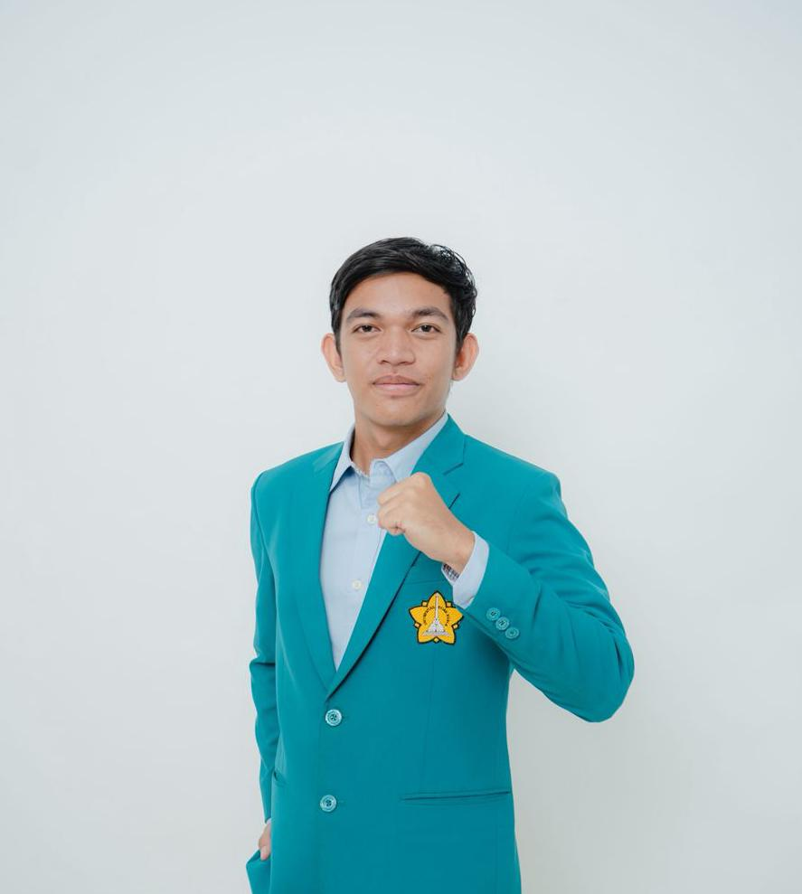

Pemilihan Ketua BEM · 2026
Hamdan
Calon Ketua BEM — Nomor Urut 01
BEM yang kerja,
bukan sekadar janji.
Satu nama, satu suara, satu periode kerja yang bisa ditagih. Baca programnya, coba simulasi coblosnya, lalu putuskan sendiri di bilik suara.
Konten contoh template kampanye — tim kampanye mengganti isi program dengan data resmi kandidat. Kenapa contoh?

Calon Ketua BEM
01 — Visi & Misi
BEM yang bisa ditagih kerjanya.
Visi
Menjadikan BEM rumah bersama mahasiswa: setiap aspirasi tercatat, setiap anggaran terbuka, setiap program ada penanggung jawabnya dan ada laporannya.
-
Suara sampai, bukan sekadar didengar
Kanal aspirasi tertulis dengan tenggat balasan 7 hari kerja dan rekap bulanan yang ditempel di papan pengumuman dan kanal resmi BEM.
-
UKM dan komunitas kembali jalan
Jadwal kegiatan, pendanaan, dan pendampingan UKM dirapikan jadi satu kalender terbuka supaya tidak ada lagi kegiatan yang mati karena tidak tahu harus lapor ke siapa.
-
Anggaran terbuka, laporan berkala
Setiap rupiah dana kemahasiswaan yang dikelola BEM dilaporkan tiap tiga bulan — pemasukan, pemakaian, dan sisa — agar bisa diperiksa siapa saja.
02 — Program Kerja
Lima program, lima penanggung jawab.
Klik tiap program untuk melihat cara kerjanya. Semua program di bawah ini contoh template — ganti dengan program resmi tim kampanye.
-
Advokasi & Aspirasi Kanal aduan + tenggat balasan
Formulir aspirasi daring dan kotak saran di sekretariat BEM. Setiap laporan masuk dicatat nomornya, dijawab paling lambat 7 hari kerja, dan rekapnya dipublikasikan tiap bulan. Laporan tanpa balasan masuk daftar tunggakan yang dibacakan di rapat terbuka.
-
Dana & Kegiatan UKM Satu kalender, satu pintu pengajuan
Kalender kegiatan UKM dibuka untuk umum, pengajuan dana memakai satu formulir baku dengan daftar cek persyaratan, dan keputusan pendanaan diumumkan beserta alasannya. UKM yang kegiatannya disetujui mendapat pendampingan administrasi sampai laporan pertanggungjawaban selesai.
-
Ruang Belajar & Fasilitas Laporan kerusakan + tindak lanjut
Survei fasilitas tiap awal semester — ruang kelas, toilet, musala, kantin, dan akses internet — hasilnya disusun jadi daftar prioritas perbaikan dan dibawa BEM ke pihak kampus dengan bukti foto dan jumlah pelapor. Progresnya dipantau di papan pengumuman.
-
Kewirausahaan Mahasiswa Bazar rutin + pendampingan usaha
Bazar mahasiswa sebulan sekali di area kampus, stan gratis untuk usaha mahasiswa baru, dan kelas singkat pencatatan keuangan serta pemasaran daring. Usaha yang sudah jalan setahun dibantu masuk pameran kampus yang lebih besar.
-
Transparansi Anggaran Laporan tiga bulanan terbuka
Laporan keuangan BEM diterbitkan tiap tiga bulan dalam format yang bisa dibaca siapa saja: pemasukan, pemakaian per program, dan sisa dana. Dokumennya disimpan terbuka dan dibahas di forum terbuka tiap akhir periode.
03 — Tahapan Pemilihan
Dari baca program sampai bilik suara.
-
Kenali calonnya
Lihat foto, baca visi-misi, dan tanyakan langsung saat debat atau kampanye terbuka.
-
Baca programnya
Buka tiap program di atas. Program yang bagus menyebut cara kerja dan penanggung jawabnya, bukan cuma janji.
-
Coba simulasi coblos
Latihan mencoblos di bawah supaya di bilik suara tidak bingung — terutama pemilih pertama.
-
Coblos di hari pemilihan
Bawa kartu identitas mahasiswa, ikuti arahan panitia, dan coblos sesuai pilihanmu. Tanggal resmi diumumkan panitia pemilihan.
04 — Simulasi Coblos
Latihan mencoblos, sebelum hari-H.
Klik kotak di kartu surat suara untuk mencoblos. Stempel COBLOS akan muncul seperti di bilik suara. Ini simulasi di perangkatmu saja — bukan suara resmi dan tidak dikirim ke mana pun.
- Coblos sekali, tidak bisa ganda — seperti surat suara asli.
- Pilihanmu tersimpan di perangkat ini; tombol ulangi untuk latihan lagi.
- Di bilik suara asli, ikuti tata cara panitia pemilihan.
Surat Suara · Simulasi
Pemilihan Ketua BEM · 2026
Belum dicoblos — klik kotak untuk mencoblos.
Simulasi latihan. Bukan pemungutan suara resmi. Pilihan tersimpan lokal di perangkat ini.
05 — Dukung Kampanye
Tulis dukunganmu, jadi relawan, atau sekadar titip pesan.
Formulir ini tersimpan di perangkatmu (localStorage) sebagai demo — tidak ada server dan tidak ada data yang dikirim ke mana pun. Untuk dukungan resmi, hubungi tim kampanye lewat kanal resmi kampus.
0 dukungan tercatat di perangkat ini.
Dukungan di perangkat ini
- Belum ada dukungan. Jadilah yang pertama lewat formulir di atas.
06 — Tanya Jawab
Yang sering ditanyakan.
Apakah simulasi coblos di situs ini suara resmi?
Bukan. Simulasi hanya latihan di perangkatmu — pilihannya tidak dikirim ke mana pun dan tidak dihitung. Suara resmi hanya yang dicoblos di bilik suara pada hari pemilihan, mengikuti tata cara panitia pemilihan.
Kenapa isi program kerja disebut "contoh"?
Repo ini awalnya hanya berisi foto kandidat dan dokumen generik — tidak ada program kerja resmi. Supaya situs ini tetap jadi template yang bisa dipakai tim kampanye mana pun, program kerja ditulis sebagai contoh yang masuk akal dan wajib diganti dengan program resmi sebelum dipakai sungguhan.
Apakah data dukungan saya dikirim ke server?
Tidak. Situs ini statis tanpa backend: nama, prodi, dan pesan hanya tersimpan di localStorage perangkatmu dan bisa dihapus dengan tombol "Hapus semua dukungan lokal".
Bagaimana tim kampanye memakai template ini?
Ganti foto di hamdan.png, nama dan nomor urut di
index.html, program kerja dan visi-misi dengan data
resmi, lalu deploy ulang ke Cloudflare Pages (lihat
docs/deploy.md). Warna dan font diatur di
styles.css dan docs/DESIGN.md.